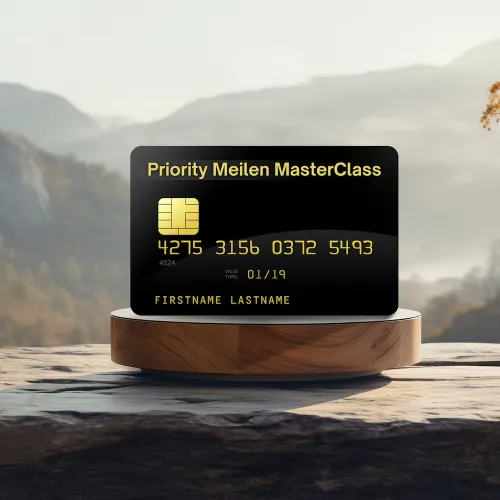
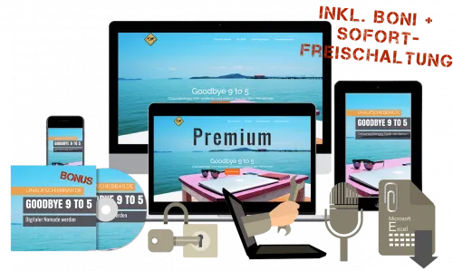
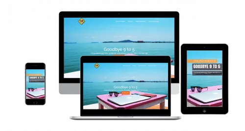
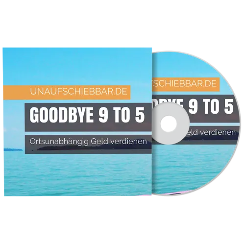

Selbstgeführte Stadtrallye Leipzig | Hint-Caching
Produktprofil · Marktplatz-Daten 2026-10-14 · Verkaufsseiten-Recherche 2026-10-14 · Kategorien: Travel & Culture, Fun & Games
- Selbstgeführte Stadtrallye Leipzig | Hint-Caching ist ein/e Mitgliederbereich & Videokurs in Travel & Culture und Fun & Games, vertrieben über den Digistore24-Marktplatz von Anbieter hintcaching, gelistet seit 2023-02-18.
- Listenpreis $46.07; Digistore24 meldet — Checkout-Konversion, — Stornierungsquote und 20 % Affiliate-Provision.
- Verdienst pro Verkauf (Affiliate): $9.22 (Anbieter-seitige Statistik, keine Prognose).
Interesse an Selbstgeführte Stadtrallye Leipzig | Hint-Caching? Aktueller Preis, Boni und Garantiebedingungen finden Sie auf der offiziellen Seite des Anbieters:
Offizielle Verkaufsseite ansehen
Affiliate-Link (Werbung) — wir verdienen ggf. eine Provision, ohne Mehrkosten für Sie.
Marktplatz-Daten
| Produkttyp | Mitgliederbereich & Videokurs |
|---|---|
| Preis | $46.07 (Single payment) |
| Affiliate-Provision | 20 % |
| Garantie/Rückgabe | Laut Verkaufsseite des Anbieters — vor dem Kauf auf der offiziellen Seite prüfen |
| Anbieter | hintcaching (gelistet seit 2023-02-18) |
| Marktplatz-Statistiken* | Checkout-Konversion — · Stornoquote — · Verdienst/Verkauf $9.22 |
* Anbieter-seitige Statistiken von Digistore24; sie hängen von der Traffic-Qualität ab und sind keine Prognose.
Marktplatz-Beschreibung des Anbieters
Empfehle unsere beliebte Stadtrallye in dieser Stadt und natürlich auch gern in vielen weiteren Städten (siehe weitere Angebote von Hint-Caching auf dem Marktplatz). Bei einer Stadtrallye von Hint-Caching begibt sich der Kunde mit seinen Freunden, der Familie oder den Kollegen auf eine interaktive Abenteuertour durch die Stadt! Das Smartphone wird zum Stadtführer und die Gruppe taucht spielerisch in einen Teil der jeweiligen Geschichte der Stadt ein. Sie erkundet dabei die schönsten und bekanntesten Sehenswürdigkeiten, an denen knifflige, individuelle Rätsel zu lösen sind. Das Erlebnis dauert etwa 2-3 Stunden und kann jederzeit ohne Termin selbständig begonnen und auf Wunsch auch pausiert werden. Das Spiel ist webbasiert und benötigt keine App. Alle Spiele sind auch spontan buch- und sofort spielbar. Sehr beliebt sind unsere Stadtrallyes auch bei Junggesellenabschieden und Teamevents sowie Betriebsausflügen und Weihnachtsfeiern. Das sind deine Vorteile als Affiliate: Großes und laufend wachsendes Angebot : Profitiere von unserem vielfältigen Angebot in vielen großen Städten in Deutschland und der Welt! Und wir wachsen immer weiter. Riesige Zielgruppe : Bei unseren Stadtrallyes ist jeder richtig, der gerne Städte erkundet. Ob jung oder alt, Single oder Pärchen oder Familie mit Kindern, in der Freizeit oder mit Kollegen, Einheimischer oder Tourist. Damit wächst die Wahrscheinlichkeit, dass auch deine Kunden zu uns passen. Faire Provision : Wir bieten dir 20 % auf deine vermittelten Verkäufe. Das ist der Satz, der auch bei großen Verkaufsplattformen für Erlebnisse und Geschenke üblich ist. Zusatzprovision bei Verkauf des Upsells : Verdiene automatisch mit, wenn dein Kunde unseren Upsell kauft. Nach jeder verkauften Stadtrallye wird dem Kunden unser Online Escape Room für Zuhause zum Sonderpreis angeboten. Die Upsell-Kaufquote liegt bei 8 %. Geringe Stornoquote : Wir haben eine geringe Stornoquote von nur 1 %. Diese entsteht auch nicht durch Unzufriedenheit, sondern lediglich durch Fehlbuchungen der Kunden (falsche Anzahl, falsche Stadt etc.). Individuelle Werbemittel : Wir haben für dich Bilder zum Download sowie passende Texte für Emails und Social Media vorbereitet. Besuche jetzt unsere Webseite zum Affiliateprogramm , um noch heute Affiliate zu werden, mit uns zusammen Freude, Spiel und Spaß in die Welt zu bringen und dabei auch noch Geld zu verdienen! Natürlich gibt es unser Affiliateprogramm auch auf Englisch: Webseite zum Affiliateprogramm auf Englisch .
Von der Verkaufsseite des Anbieters
Seitentitel: Stadtrallye Leipzig: "Dilemma - Streben nach Anerkennung"
Meta-Beschreibung: Die VÖLLIG ANDERE Stadtrallye Leipzig: Spannende Story mit Stadtbezug! Rätsel an Sehenswürdigkeiten. Schon ab 2 Spieler. 2-3 Stunden.
Hauptüberschrift
Stadtrallye Leipzig
Abschnitts-Überschriften
- Highlights der Stadtrallye Leipzig
- Stadtrallye Leipzig: 2-3 Stunden Spielspaß in der Altstadt von Leipzig
- Was du unbedingt wissen musst, bevor du eine Stadtrallye buchst:
- Stadtrallye Leipzig buchen
Einstiegstext
Unsere Stadtrallye Leipzig ist ein interessanter Mix aus Schnitzeljagd, Rätseltour, Outdoor Escape Game und Stadtführung. Rätselt euch zusammen durch die Stadt und erlebt dabei eine spannende Geschichte aus der Vergangenheit! Entdeckt die Stadt mit ihren wichtigsten Sehenswürdigkeiten sowie unbekannten Orten auf eine völlig neue Art . So wird euer selbstgeführter Stadtrundgang zu einem kurzweiligen Abenteuer.
Der Preis gilt pro Gruppe mit bis zu 6 Spielern. Bei mehr Spielern einfach entsprechend mehrere Tickets buchen.
Ihr bewegt euch beim Rätseln im Gehtempo im Bereich der Altstadt zwischen Thomaskirche, Roßplatz, Augustusplatz und Brühl. Die Rallye endet in der Nähe der Thomaskirche. Hinweise für das Lösen der Rätsel findet ihr an bekannten Sehenswürdigkeiten, Infotafeln usw.
Ihr könnt die Stadtrallye jederzeit starten . Du kannst auch beispielsweise jetzt den Zugang buchen und die Stadtrallye später zu einem bestimmten Zeitpunkt mit deinem Team starten. Das Spiel dauert insgesamt etwa 2-3 Stunden. Es gibt kein zeitliches Limit, aber es ist möglich, die Zeit mittels integrierter Stoppuhr zu messen. Ihr könnt auch zwischendurch eine Pause machen und danach weiterspielen.
Fragen, die die Verkaufsseite beantwortet
- In welchen Städten gibt es die Handy Stadtrallyes?
- Was ist eine Stadtrallye Leipzig im Allgemeinen?
- Wo sind die Rätsel bei einer Stadtrallye Leipzig normalerweise zu lösen?
- Ist eine Stadtrallye Leipzig für alle Altersklassen geeignet?
- Mit wie vielen Spielern kann man eine Stadtrallye Leipzig spielen?
- Kann man bei einer Stadtrallye Leipzig auch gegeneinander antreten?
- Wie lange geht eine Stadtrallye Leipzig?
- Was kostet eine Stadtrallye Leipzig im Vergleich zu einem Escape Room oder einer Stadtführung?
- Was sind die Vorteile von einer Stadtrallye Leipzig gegenüber anderen, ähnlichen Aktivitäten?
- Wie funktioniert die Buchung einer Stadtrallye Leipzig?
Recherche-Methode: rohes HTML · 3366 Wörter · Qualität: rich · recherchiert am 2026-10-14. Vollständige Recherche-Datei (MD) ↗
Wie Produkte dieser Art geliefert werden
Allgemeiner Hinweis zu diesem Produkttyp (keine anbieterspezifische Anleitung): Videokurse laufen über einen Mitgliederbereich: nach dem Checkout erhalten Sie Zugangsdaten per E-Mail und können die Lektionen in Ihrem eigenen Tempo streamen. Für die genaue Anwendung von Selbstgeführte Stadtrallye Leipzig | Hint-Caching sind die offizielle Verkaufsseite und die enthaltenen Materialien maßgeblich.
Gut zu wissen
- Keine Garantie-Formulierung in unserer Recherche gefunden — bestätigen Sie das Rückgabefenster auf der offiziellen Seite, bevor Sie kaufen.
- Marktplatz-Zahlen (Preis, Provision, Konversion, Stornoquote) — Quelle: offizielle Digistore24-Marktplatz-API (Affiliate-Sicht), Stand 2026-10-14. Gegenprüfung: Marktplatz-Suche nach Produkt-ID 485118.
- Verkaufsseiten-Zitate — Quelle: https://hint-caching.de/stadtrallye-leipzig/, abgerufen 2026-10-14 (Methode: rohes HTML). Verify: offizielle Seite öffnen.
- Garantie / Rückgabe — vom Anbieter festgelegt; vor dem Kauf auf der Verkaufsseite bestätigen.
- Nicht von uns geprüft: Produktqualität, Ergebnisse, Testimonials — kein Praxistest für dieses Listing durchgeführt.
Häufige Fragen zu Selbstgeführte Stadtrallye Leipzig | Hint-Caching
Antworten aus dem Marktplatz-Snapshot (2026-10-14) und der Verkaufsseiten-Recherche (2026-10-14); Anbieteraussagen sind inline gekennzeichnet.
Was ist Selbstgeführte Stadtrallye Leipzig | Hint-Caching?
Selbstgeführte Stadtrallye Leipzig | Hint-Caching ist ein Angebot des Typs „Mitgliederbereich & Videokurs" im Digistore24-Marktplatz, Anbieter: hintcaching, gelistet seit 2023-02-18. Eingepflegt unter Reisen & Kultur und Spaß & Spiele. Digistore24 wickelt Checkout, Lieferung und Rückgaben ab.
Wie viel kostet Selbstgeführte Stadtrallye Leipzig | Hint-Caching?
Der Digistore24-Marktplatz listet es für $46.07 (single payment). Preise legt der Anbieter fest und können sich ändern — der Marktplatz-Eintrag oben zeigt den Schnappschuss; die offizielle Verkaufsseite zeigt den aktuellen Preis.
Gibt es eine Geld-zurück-Garantie für Selbstgeführte Stadtrallye Leipzig | Hint-Caching?
Unsere Verkaufsseiten-Recherche hat keine explizite Garantie-Formulierung gefunden. Viele Digistore24-Produkte bieten 60 Tage Geld-zurück, aber das legt jeder Anbieter selbst fest — bestätigen Sie es auf der offiziellen Verkaufsseite, bevor Sie kaufen.
Ist Selbstgeführte Stadtrallye Leipzig | Hint-Caching seriös?
Wir bewerten keine Seriosität — wir veröffentlichen überprüfbare Zahlen: Anbieter hintcaching (gelistet seit 2023-02-18), Checkout-Konversion —, Stornoquote —, Affiliate-Verdienst/Verkauf $9.22 (alles Anbieter-seitige Marktplatz-Statistiken). Lesen Sie unsere 6-Punkte-Bewertungsmethode und entscheiden Sie anhand der Zahlen — oder diskutieren Sie Selbstgeführte Stadtrallye Leipzig | Hint-Caching auf GitHub.
Wo kann ich Selbstgeführte Stadtrallye Leipzig | Hint-Caching sicher kaufen?
Nur über die offizielle Verkaufsseite, die auf dieser Seite verlinkt ist (Checkout und Rückgaben laufen über Digistore24). Prüfen Sie dort Preis und Garantie vor der Bestellung. Der Link ist ein Affiliate-Link — der Kauf unterstützt diese Website ohne Mehrkosten für Sie.
Wie erhalte ich Selbstgeführte Stadtrallye Leipzig | Hint-Caching nach der Zahlung?
Der Checkout läuft über Digistore24: Nach der Zahlung erhalten Sie Ihren Zugang oder Download per E-Mail und in Ihrem Digistore24-Kundenkonto. Lieferdetails für diesen Produkttyp: Videokurse laufen über einen Mitgliederbereich: nach dem Checkout erhalten Sie Zugangsdaten per E-Mail und können die Lektionen in Ihrem eigenen Tempo streamen. Bei Problemen kann der Digistore24-Käufersupport Ihre Bestellung wiederherstellen.
Alle 50 Käuferfragen zu Reisen & Kultur — das komplette Kategorie-FAQ.
Selbstgeführte Stadtrallye Leipzig | Hint-Caching auf Reddit diskutieren
In Community-Threads vergleichen echte Käufer Erfahrungen. Wir verlinken Communities, keine einzelnen Posts — Threads verschwinden, Subreddits bleiben:
- r/travel — deutschsprachige Community mit Diskussionen zu travel & culture.
- Reddit-Suche nach „Selbstgeführte Stadtrallye Leipzig | Hint-Caching" — Live-Ergebnisse, von uns nicht beeinflusst.
- Top-„Erfahrungs"-Treffer dieses Jahr — selbst nach Aktualität filtern.
Passendes auf Amazon.de
Physische Produkte und Zubehör, die häufig zusammen mit Selbstgeführte Stadtrallye Leipzig | Hint-Caching gekauft werden:
- Reisezubehör auf Amazon.de — Top-Ergebnisse, Amazon-Ranking.
- Bestseller: Reisezubehör — live Liste von Amazon, von uns nicht kuratiert.
Werbung: Als Amazon-Partner verdient DigistorePicks DE an qualifizierten Käufen (Partner-tag adminstorede-21). Amazon setzt eigene Preise und Provisionen (niedrige einstellige Prozente — weit unter den 30–75% der Digistore24-Anbieter). Amazon ist ein Convenience-Angebot für Sachprodukte, kein Ersatz für das digitale Produkt oben.
Ähnliche Angebote in Reisen & Kultur

Hohe Provision : 50 % Provision auf jede Empfehlung! Statt Holzklasse endlich Business oder First Class Flüge zu Economy Preisen ✈️ Bezahle Business + First Cla

Empfehle unser einzigartiges Produkt für alle angehenden digitalen Nomaden mit einer hohen Kaufrate. Deine Vorteile: Exzellente Conversions : Profitiere von uns

Empfehle unser einzigartiges Produkt für alle angehenden digitalen Nomaden mit einer hohen Kaufrate. Deine Vorteile: Exzellente Conversions : Profitiere von uns
Weitere Angebote von hintcaching
Gesamtes Sortiment: hintcaching Anbieter-Hub — alle Listings mit Marktplatz-Daten.
Empfehle unsere beliebte Stadtrallye in dieser Stadt und natürlich auch gern in vielen weiteren Städten (siehe weitere Angebote von Hint-Caching auf dem Marktpl
Empfehle unsere beliebte Stadtrallye in dieser Stadt und natürlich auch gern in vielen weiteren Städten (siehe weitere Angebote von Hint-Caching auf dem Marktpl
Empfehle unsere beliebte Stadtrallye in dieser Stadt und natürlich auch gern in vielen weiteren Städten (siehe weitere Angebote von Hint-Caching auf dem Marktpl
Gleicher Anbieter auf unserer englischen Website
- Self-guided scavenger hunt Cologne | Hint-Caching — $54.82 (Travel & Culture)
- Self-guided scavenger hunt Frankfurt | Hint-Caching — $54.82 (Travel & Culture)
- Self-guided scavenger hunt Bamberg | Hint-Caching — $54.82 (Travel & Culture)
Gleicher Anbieter, englischsprachige Marktplatz-Listings.
Selbstgeführte Stadtrallye Leipzig | Hint-Caching ist auch gelistet in
Spaß & Spiele (87 Produkte)
Ähnliche Preislage in Reisen & Kultur
Werde Affiliate für „Leben ohne festen Wohnsitz“ Der Guide für Weltenbummler, digitale Nomaden und freiheitsliebende Unternehmer – Kein Mietvertrag, keine feste
Werde Affiliate für „Steuerfrei um die Welt“ Wie du Deutschland hinter dir lässt und weltweit freier lebst – Ortsunabhängig leben und die eigene Steuersituation
Praxisnaher Ratgeber für deutschsprachige Menschen, die nach Ungarn auswandern oder dort eine Immobilie kaufen möchten. Der „Auswandern nach Ungarn – Praxis-Gui

Empfehle unser einzigartiges Produkt für alle angehenden digitalen Nomaden mit einer hohen Kaufrate. Deine Vorteile: Exzellente Conversions : Profitiere von uns
Ähnliche Suchanfragen
Wo Sie es sich ansehen können
Wo Sie es sich ansehen können
Aktuelle Preise, Garantie und Boni finden Sie auf der offiziellen Verkaufsseite:
Offizielle Verkaufsseite ansehen
Das ist ein Affiliate-Link (Werbung) — kaufen Sie darüber, verdienen wir ggf. eine Provision, ohne Mehrkosten für Sie.
Quellen & weiterführende Informationen
- Offizielle Verkaufsseite (aktueller Preis, Garantie, Boni): hint-caching.de/stadtrallye-leipzig/ (Affiliate-Link)
- Öffentliche Digistore24-Produktseite: checkout-ds24.com/product/485118
- Vollständige Recherche-Datei (Markdown, versioniert): content/products/51151-selbstgef-hrte-stadtrallye-leipzig-hint-caching.md
- Affiliate-Supportseite des Anbieters: hint-caching.de/affiliateprogramm/
- Marktplatz-Kategorie: Reisen & Kultur
Wie wir Produkte wie Selbstgeführte Stadtrallye Leipzig | Hint-Caching bewerten
Sechs Prüfungen, ausschließlich mit offiziellen Marktplatz-Zahlen. Die vollständige Bewertungsmethode lesen · unsere Recherche-Standards & Kennzeichnung.
Fragen oder eigene Erfahrungen mit Selbstgeführte Stadtrallye Leipzig | Hint-Caching?
Praxis-Tests veröffentlichen wir erst, nachdem wir ein Produkt selbst gekauft haben — aber Ihre Erfahrung hilft anderen Lesern: Diskussion zu Selbstgeführte Stadtrallye Leipzig | Hint-Caching auf GitHub starten/verfolgen. Falsche Zahl gefunden? Korrektur melden — jede Seite zeigt ihre Datenstände, Korrekturen gelten für die ganze Website.